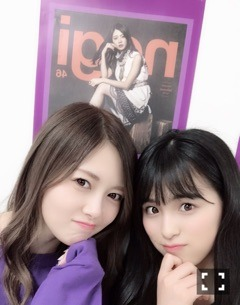

2019/0312Tueお財布の日。
お疲れ様です。
ガルちゃんももちゃん
1人でね自撮りをするの心細かったの
そしたらガルちゃんが
じゃあ僕もうつるよって、優しいなぁ
7th year Birthday Live
ありがとうございました。
全曲披露、何回も落ち込みながらの
リハーサルの日々で、確認をするたび
不安が増えていくのです、
自信のないネガティヴなまま
ライブ期間を過ごしてしまいました。
今回のライブでは、
生駒さんのポジションに入らせて
頂くことが多く、センターに立つことも。
先輩方の歴史のある曲に自分が入って
曲のイメージが変わってしまったら
どうしようなどと考えていました
新しく覚えなければいけない曲も多く、
覚えが悪いため何回教えて頂いても
覚える事が出来ず、先輩に聞き、
先生に聞き、たくさん助けて頂きました。
2年前のバースデーライブで
初めて先輩方と同じステージに立ち、
ステージ上でパニックになり。
大泣きでしたよね...笑
勝手にはけようとすらしていた2年前
そんな桃子でしたが、
7th year Birthday Live 3日目は
「 京セラ行くぞー！ 」
と自分の言葉でライブが始まったこと
自分でも驚きました。
そして、一曲目に三番目の風を
加入して初めて頂いた曲を
初めて頂いた制服を、久しぶりに着て
3期生のみんながなぜだかいつもより、
もっとキラキラしているように
思ったのです、
涙が出そうになりましたよ～
時は流れています、
嬉しいような悲しいような
わからないですが...
最終日4日目は、
七瀬さんの卒業コンサートで
たくさんのメンバーが涙を、
たくさん愛されているなぁと
とても温かい気持ちになりました。
今回のライブ期間は、
限界だと思うことばかりで
ステージ上では泣きませんでしたが、
裏ではもう出来ないと涙が出まして、
そんな時白石さんは、お姉様がですね、
そんなこと言わない！
泣かないももこ。できるんだから！
と言ってくれました。優しいです。
この言葉で頑張らなきゃ、と
折れかけていた心は立ち直ったのです^ ^

皆さん知ってるかもですが
ももちゃんはお姉様がだいすき。
そう、だいすき
はい～そんなこんなで無事に
ライブを完走することができたのですね～✨
見に来てくださった方、
映画館に足を運んで下さった方、
ありがとうございました。
先日は、帰り道は遠回りしたくなるの
全国握手会もありました
純ちゃんのファンの方、
いつも来てくださるももこのファンの方
他の子推してるけど来てみたみたいな
ちょっとももこの嫌がる浮気性タイプ、
だけどね、一回来たらもうこれからずっと
来なきゃなんだよ？わかってるかなぁ^ ^
来てくださった皆さん
本当にありがとうございました。

これすると唇ぷるぷるなるんですよーー
と自慢していたら
えー飛鳥ちゃんもやる～って。
はーとはーとはーと
ももこはどこに行ったらいいか
わからない時、とりあえず
真夏さんのそばに近寄ります、笑
新しいテディーベアちゃんが
やって来ます、待ち遠しいなぁ。
では、またね
2019/03/12 09:00
コメント(773)
お疲れ様でした！
バスラ感動しました！
これからも頑張ってください！
応援してます！！
バスラ感動しました！
これからも頑張ってください！
応援してます！！
ブログ更新ありがとう！
桃子の人懐っこい性格はメンバーのみんなから愛されてるね 僕はそんな桃子が大好きです。いつも画面越しに見てるけどいつか生で桃子を見たいって思ってます。部活引退したら必ず握手行きますね！
桃子の人懐っこい性格はメンバーのみんなから愛されてるね 僕はそんな桃子が大好きです。いつも画面越しに見てるけどいつか生で桃子を見たいって思ってます。部活引退したら必ず握手行きますね！
ライブお疲れ様です。
今年、浪人して先日ある大学の医学部から合格貰ったよ！これで握手会行けます。忙しくて時間ないかもしれないけど頑張って暇を見つけて、推しの桃子に会いに行きます。
体調崩さぬよう、自分のペースで仕事頑張って
今年、浪人して先日ある大学の医学部から合格貰ったよ！これで握手会行けます。忙しくて時間ないかもしれないけど頑張って暇を見つけて、推しの桃子に会いに行きます。
体調崩さぬよう、自分のペースで仕事頑張って
ももちゃん！ブログ有難う
最近たくさん更新してくれて嬉しいです。
バスラ3日目だけ京セラで観れたの！！！オープニングの桃子の「いくぞー！！」で泣いたよ…
握手会もももちゃんに会えて良かった〜！また個握行きます！！
最近たくさん更新してくれて嬉しいです。
バスラ3日目だけ京セラで観れたの！！！オープニングの桃子の「いくぞー！！」で泣いたよ…
握手会もももちゃんに会えて良かった〜！また個握行きます！！
飛鳥ちゃんもももちゃんも可愛いかわいい
バスラお疲れ様！素敵な4日間でした^ ^
ステージの桃子はキラキラして楽しそうだったからこっちも楽しさアップ！
お姉さん達が助けてくれるのは桃子も手を差し伸べられる人だからだと思うよ♪
ステージの桃子はキラキラして楽しそうだったからこっちも楽しさアップ！
お姉さん達が助けてくれるのは桃子も手を差し伸べられる人だからだと思うよ♪
桃子〜〜！ブログ更新ありがとう〜〜！
麻衣ちゃんね、桃子大好きだね、わたしも麻衣ちゃん大好きです
麻衣ちゃんも大好きだけど、もちろん桃子も大好きだから。
だから桃子が麻衣ちゃんのことブログに書いてくれるととてもほっこりした気持ちになるの〜〜
またブログ更新楽しみにしてるね！
麻衣ちゃんね、桃子大好きだね、わたしも麻衣ちゃん大好きです
麻衣ちゃんも大好きだけど、もちろん桃子も大好きだから。
だから桃子が麻衣ちゃんのことブログに書いてくれるととてもほっこりした気持ちになるの〜〜
またブログ更新楽しみにしてるね！
おはよー!桃子さん!
泣き虫だったのに、たくましくなったね！
京セラドーム楽しかったよ。一日目二日目
これからもたくさん楽しませてね!
したっけねー！
泣き虫だったのに、たくましくなったね！
京セラドーム楽しかったよ。一日目二日目
これからもたくさん楽しませてね!
したっけねー！
桃ちゃん、
バースデーライブお疲れ様でした
かろうじて参加できた
3日目。
桃ちゃんの「京セラいくぞー」で
号泣しそうになったのは内緒です。
とても素敵な時間だったよ。
桃ちゃんキラキラに輝いてたよ
バースデーライブお疲れ様でした
かろうじて参加できた
3日目。
桃ちゃんの「京セラいくぞー」で
号泣しそうになったのは内緒です。
とても素敵な時間だったよ。
桃ちゃんキラキラに輝いてたよ
桃子の煽り、桃子のセンターすごく好きだよ！
これからも頑張ってね！！
ずっと応援します
これからも頑張ってね！！
ずっと応援します
ももこ、好き^ - ^
完全に推しメンだよ！
完全に推しメンだよ！
桃子〜ブログ更新ありがとう！
birthdaylive、4日間お疲れ様でした！3日目に桃子の掛け声から始まったこと、見に行けなかったけどきっと素敵だったんだろうね...映像化されたら買って観るね！4日目の卒業コンサートは家で見てたよ(^O^)羽根の記憶でセンターに立っていた桃子は2年前のbirthdayliveの時の桃子とは明らかに変化してて、自信を持っている感じがしたよ！あと、命は美しいとかインフルエンサーで表情がキリッと変わるところ、凄くかっこよかった…！
握手会で直接感想を伝えたいけど次に会えるのが5月のアルバム個握なのでここで先に伝えました(^^)
それではでは〜っ！！
birthdaylive、4日間お疲れ様でした！3日目に桃子の掛け声から始まったこと、見に行けなかったけどきっと素敵だったんだろうね...映像化されたら買って観るね！4日目の卒業コンサートは家で見てたよ(^O^)羽根の記憶でセンターに立っていた桃子は2年前のbirthdayliveの時の桃子とは明らかに変化してて、自信を持っている感じがしたよ！あと、命は美しいとかインフルエンサーで表情がキリッと変わるところ、凄くかっこよかった…！
握手会で直接感想を伝えたいけど次に会えるのが5月のアルバム個握なのでここで先に伝えました(^^)
それではでは〜っ！！
ももちゃんおつかれさまです
いつも元気をくれるももちゃんが大好きです！
ずっと応援してます！
いつも元気をくれるももちゃんが大好きです！
ずっと応援してます！
桃子ー！！！
友達に与田ちゃん推しって言われて桃子に握手してもらえなかったけど次の握手会も絶対行くからね！！
次こそは握手してもらうからなーー！！
友達に与田ちゃん推しって言われて桃子に握手してもらえなかったけど次の握手会も絶対行くからね！！
次こそは握手してもらうからなーー！！
かわいい
桃子久々の更新嬉しいよ！
羽根の記憶のセンターカッコ良かったよ！！
もももばめも待ってるね！
羽根の記憶のセンターカッコ良かったよ！！
もももばめも待ってるね！
桃子ブログ更新ありがとう！
バスラお疲れさま。入ったばっかりの頃、沢山泣いていた桃子が、ステージ上でキラキラした笑顔でパフォーマンスしているのを見て、三番目の風から思わず泣いていました。握手会でも言ったけどね笑
そんな桃子を最初から推し続けて、成長を見守り続けられていることがとても幸せだよ。
これからも応援し続けますので、握手会等で会うときはよろしくお願いしますね。
ぱぱ
バスラお疲れさま。入ったばっかりの頃、沢山泣いていた桃子が、ステージ上でキラキラした笑顔でパフォーマンスしているのを見て、三番目の風から思わず泣いていました。握手会でも言ったけどね笑
そんな桃子を最初から推し続けて、成長を見守り続けられていることがとても幸せだよ。
これからも応援し続けますので、握手会等で会うときはよろしくお願いしますね。
ぱぱ
3/17の個握行くよ〜！
12/23以来2回目！
前回は1ミリも伝えたいこと伝えられなかったから今回はしっかり喋るね！
12/23以来2回目！
前回は1ミリも伝えたいこと伝えられなかったから今回はしっかり喋るね！
桃子ブログありがとう！
そして、バスラお疲れ様！
3日目会場行ったよー！最初の曲が三番目の風でめっちゃ嬉しかったよー！
いろんな人と写真ありがとう❗️
真夏のそばに寄るところかわいすぎ！！笑
それじゃあ、またねー！
そして、バスラお疲れ様！
3日目会場行ったよー！最初の曲が三番目の風でめっちゃ嬉しかったよー！
いろんな人と写真ありがとう❗️
真夏のそばに寄るところかわいすぎ！！笑
それじゃあ、またねー！
全握の桃子可愛かった！
飛鳥推しだけど行ってしまったからこれからも行くねー！
飛鳥推しだけど行ってしまったからこれからも行くねー！
可愛いすぎて授業集中できん
ももこブログ更新ありがとう(๑˃̵ᴗ˂̵)
どの写真のももこも可愛い(๑˃̵ᴗ˂̵)
ももちゃん含め三期生は最初は想像もつかんぐらいめちゃくちゃ成長したね！
この2年間の成長を生で感じたよ！
ももこの掛け声もめっちゃ良かった！
これからも楽しみやなぁ
どの写真のももこも可愛い(๑˃̵ᴗ˂̵)
ももちゃん含め三期生は最初は想像もつかんぐらいめちゃくちゃ成長したね！
この2年間の成長を生で感じたよ！
ももこの掛け声もめっちゃ良かった！
これからも楽しみやなぁ
更新ありがとう！
いつも応援してるよ〜
いつも応援してるよ〜
わーーーー！ももちゃん更新ありがとう！はーと
ライブ1日目だけいったよ〜！
めちゃ楽しかったし、
ここじゃないどこか、可愛すぎて泣いちゃったよ！（笑）
全握も純ちゃんももちゃんペアやったから
いきたかったなぁ〜（ ; ; ）
今週の名古屋の個握は行くから、
たのしみや〜〜！♪
ライブ1日目だけいったよ〜！
めちゃ楽しかったし、
ここじゃないどこか、可愛すぎて泣いちゃったよ！（笑）
全握も純ちゃんももちゃんペアやったから
いきたかったなぁ〜（ ; ; ）
今週の名古屋の個握は行くから、
たのしみや〜〜！♪
桃子のまわりにはいい先輩達だね！
でも今度はその先輩達の意志を受け継いで4期のいい手本にならないとね！
今日も1日頑張ろう！
でも今度はその先輩達の意志を受け継いで4期のいい手本にならないとね！
今日も1日頑張ろう！
桃子ブログ更新ありがとう︎☺︎✌︎︎
桃子( ¨̮ )
もっともっとまいやんとあすかとの写真見たいな！
もっともっとまいやんとあすかとの写真見たいな！
ガルちゃん可愛いけど、それ以上に桃子が可愛かった。
桃子〜
俺も握手会行きたかった〜
今度行くね
俺も握手会行きたかった〜
今度行くね
ももちゃん！3月21日のポトメ名古屋で初めて乃木坂の握手会に行きます！ももちゃんを推してるけど、ずっと行ったことがなくて初めてだから優しくしてくださいଘ(੭ˊ꒳ˋ)੭✧
ずっとももちゃんレーンに居ようと思います！！！！
すごい楽しみです♥
ずっとももちゃんレーンに居ようと思います！！！！
すごい楽しみです♥
桃ちゃん、おはよーございます♪
ブログ更新、ありがとう！
一昨日は、握手会お疲れ様でした
楽しくできたかな？
…圧がつよいんじゃぁ〜www
その重さも背負いたいんですけどね♪
バースデーライブ、きっといっぱいいっぱいだったろうなとは思ってましたが、やっぱり辛かったんですね…表では笑顔でやり切ってくれてありがとう
おかげでとても楽しく過ごせました
まい姉さんにも本当にいつも感謝です
三日目のオープニング、桃ちゃんの第一声が、2年前の神宮と比べ物にならないくらい力強くて感動しました！
そこから始まった三番目の風
今までで一番輝いてました！
本当に素晴らしかった！
そして、3期生全員揃った3期生曲を全曲聴けて、最高の日でした
ありがとう！
21日の名古屋で直接伝えられるのを楽しみにしています♪
ではまたね〜♪
ブログ更新、ありがとう！
一昨日は、握手会お疲れ様でした
楽しくできたかな？
…圧がつよいんじゃぁ〜www
その重さも背負いたいんですけどね♪
バースデーライブ、きっといっぱいいっぱいだったろうなとは思ってましたが、やっぱり辛かったんですね…表では笑顔でやり切ってくれてありがとう
おかげでとても楽しく過ごせました
まい姉さんにも本当にいつも感謝です
三日目のオープニング、桃ちゃんの第一声が、2年前の神宮と比べ物にならないくらい力強くて感動しました！
そこから始まった三番目の風
今までで一番輝いてました！
本当に素晴らしかった！
そして、3期生全員揃った3期生曲を全曲聴けて、最高の日でした
ありがとう！
21日の名古屋で直接伝えられるのを楽しみにしています♪
ではまたね〜♪
お疲れ様
ももちゃんおはよう！
ブログ更新ありがとう！
バスラお疲れさま！
見てる方も全日参戦だとさすがに疲れたのにやってる方はもっとしんどいよね…
めちゃくちゃ楽しめたよ、ありがとう。
3日目、三番目の風スタートは盛り上がった！
初日かな、ここじゃないどこかでハートに乗って空飛んでたけどどんな感じだったんだろう
いい景色だったのかな
また大阪全握で聞きに行くね〜
今日も頑張ろー
ブログ更新ありがとう！
バスラお疲れさま！
見てる方も全日参戦だとさすがに疲れたのにやってる方はもっとしんどいよね…
めちゃくちゃ楽しめたよ、ありがとう。
3日目、三番目の風スタートは盛り上がった！
初日かな、ここじゃないどこかでハートに乗って空飛んでたけどどんな感じだったんだろう
いい景色だったのかな
また大阪全握で聞きに行くね〜
今日も頑張ろー
ももちゃんブログ更新ありがとう♪
ガルちゃんももちゃん可愛い笑
ももちゃん1人でも可愛いのに、ガルちゃんコラボしたらさらに可愛い ❤
バスラお疲れ様♪今年は全曲披露で大変な中、本当にお疲れ様でした(_ _)
めちゃくちゃ大変だったよね……でも助けてくれたのはまいやんお姉ちゃんだったんだ
本当にまいもも大好き♪これからも仲の良い2人の姿を見せてください(^-^)
ガルちゃんももちゃん可愛い笑
ももちゃん1人でも可愛いのに、ガルちゃんコラボしたらさらに可愛い ❤
バスラお疲れ様♪今年は全曲披露で大変な中、本当にお疲れ様でした(_ _)
めちゃくちゃ大変だったよね……でも助けてくれたのはまいやんお姉ちゃんだったんだ
本当にまいもも大好き♪これからも仲の良い2人の姿を見せてください(^-^)
ももちゃん！3月21日のポトメ名古屋で初めて乃木坂の握手会に行きます！ももちゃんを推してるけど、ずっと行ったことがなくて初めてだから優しくしてくださいଘ(੭ˊ꒳ˋ)੭✧
ずっとももちゃんレーンに居ようと思います！！！！
すごい楽しみです♥
ずっとももちゃんレーンに居ようと思います！！！！
すごい楽しみです♥
ももちゃん
初めてコメントしてみます。逃げ水の時からずっとずっと推しで大好きです！いつか、握手会に行こうって思うけれどなかなか勇気が出ないです 次は挑戦してみます！！
ももちゃんは、寝る前に必ずすることとかありますか？
これからもずっと大好きです！
初めてコメントしてみます。逃げ水の時からずっとずっと推しで大好きです！いつか、握手会に行こうって思うけれどなかなか勇気が出ないです 次は挑戦してみます！！
ももちゃんは、寝る前に必ずすることとかありますか？
これからもずっと大好きです！
更新ありがとうございます。
ライブの大園さんとても輝いてました。
ライブの大園さんとても輝いてました。
桃子可愛すぎだ( ;ᯅ; )
いろいろお疲れ様でした
ももこ可愛い
ももちゃん、今日のブログにたくさんの文章と写真ありがとう〜
2年前からは考えられない、ももちゃんの成長ぶり。よくがんばったね、、、泣
もうすぐでわたし上京するから、ももちゃんにいっぱい逢いに行くね。ライブも握手会もたのしみ、！！
じゃあ、これからも ももちゃんらしく頑張ってね。
ももちゃんは本当に愛されキャラだなあ、と。
ちゃんとした考えを持ってて、誰かに支えられながらもちゃんと頑張ってる、進もうとしてる。
とにかくももちゃんが一番で大好き！！！
ブログ更新ありがとう(*^^*)
ちゃんとした考えを持ってて、誰かに支えられながらもちゃんと頑張ってる、進もうとしてる。
とにかくももちゃんが一番で大好き！！！
ブログ更新ありがとう(*^^*)
ほんとかわいい〜
ブログ更新ありがとう！！
三番目の風大好きな曲！！！
三番目の風大好きな曲！！！
全国握手会行きました！いつもより桃子レーンが混んでいて大変でした。、
次は5月の個握も行きます！！今からすごい楽しみです！！
次は5月の個握も行きます！！今からすごい楽しみです！！
ももちゃんブログ更新ありがとう！！！
実習でライブ行けなくて桃子の煽りスタート聞けなかったけどでもいつかまた生で聞ける日を願ってももちゃんを想って毎日過ごしているよ！
握手会も相変わらずの可愛さで永遠の神推しは一生変わらないです大好き！！！！
実習でライブ行けなくて桃子の煽りスタート聞けなかったけどでもいつかまた生で聞ける日を願ってももちゃんを想って毎日過ごしているよ！
握手会も相変わらずの可愛さで永遠の神推しは一生変わらないです大好き！！！！
桃子ぉ～
本当にライブお疲れ様！
桃子センターの羽根の記憶生駒ちゃんとは違う俺の好きな桃子の良さが出てて、ありがとうって言いたい！笑
ほんとよく成長してるよ
桃子みたいに成長できるように俺も頑張るね！
名古屋の全握行くね！
ほんとにお疲れ様。
桃子センターの羽根の記憶生駒ちゃんとは違う俺の好きな桃子の良さが出てて、ありがとうって言いたい！笑
ほんとよく成長してるよ
桃子みたいに成長できるように俺も頑張るね！
名古屋の全握行くね！
ほんとにお疲れ様。
バスラお疲れ様です。
俺もお姉様(白石さん)が大好きです^_^
ももちゃんも好きです（＾ν＾）
これからも応援してます。
俺もお姉様(白石さん)が大好きです^_^
ももちゃんも好きです（＾ν＾）
これからも応援してます。


最高のライブでした！
今週末日曜日に名古屋に握手会行きます！！
楽しみです！
やたー